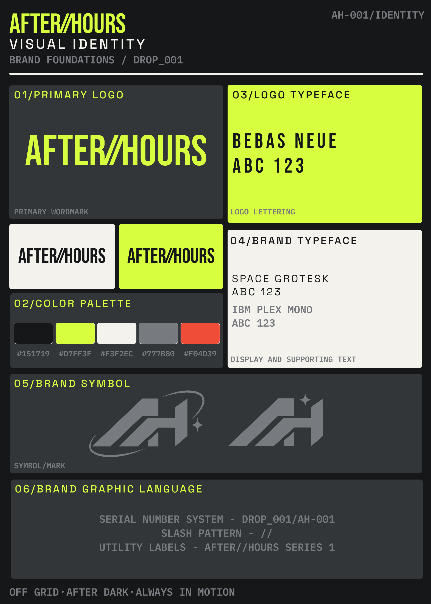

01 — BRAND IDENTITY
Concept / Visual system
Concept / Visual system

Identity / Art direction / Graphic systems
After // Hours
A cyberpunk-influenced identity built around high-contrast typography, modular graphic elements, and a sharp electric palette.